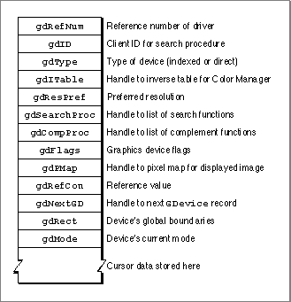

Legacy Document
Important: The information in this document is obsolete and should not be used for new development.
Important: The information in this document is obsolete and should not be used for new development.


About Graphics Devices
A graphics device is anything into which QuickDraw can draw. There are three types of graphics devices: video devices (such as plug-in video cards and built-in video interfaces) that control screens, offscreen graphics worlds (which allow your application to build complex images off the screen before displaying them), and printing graphics ports for printers. The chapter "Offscreen Graphics Worlds" in this book describes how to use QuickDraw to draw into an offscreen graphics world; the chapter "Printing Manager" in this book describes how to use QuickDraw to draw into a printing graphics port.For a video device or an offscreen graphics world, Color QuickDraw stores state information in a
GDevice record.Note that printers do not haveGDevicerecords. Color QuickDraw automatically createsGDevicerecords. (Basic QuickDraw does not createGDevicerecords, nor does basic QuickDraw support multiple screens.)When the system starts up, it allocates and initializes a handle to a
GDevicerecord for each video device it finds. When you use theNewGWorldfunction (described in the chapter "Offscreen Graphics Worlds" in this book), Color QuickDraw automatically creates aGDevicerecord for the new offscreen graphics world.All existing
GDevicerecords are linked together in a list, called the device list; the global variableDeviceListholds a handle to the first record in the list. At any given time, exactly one graphics device is the current device (also called the active device)--the one on which drawing is actually taking place. A handle to itsGDevicerecord is stored in the global variableTheGDevice. By default, theGDevicerecord corresponding to the first video device found is marked as the current device; all other graphics devices in the list are initially marked as inactive.When the user moves a window or creates a window on another screen, and your application draws into that window, QuickDraw automatically makes the video device for that screen the current device. Color QuickDraw stores that information in the global variable
TheGDevice. As Color QuickDraw draws across a user's video devices, it keeps switching to theGDevicerecord for the video device on which Color QuickDraw is actively drawing.The user can use the Monitors control panel to set the desired pixel depth of each video device; to set the display to color, grayscale, or black and white; and to set the position of each screen relative to the main screen (that is, the one that contains the menu bar). The Monitors control panel stores all configuration information for a multiscreen system in the System file in a resource of type
'scrn'that has a resource ID of 0. Your application should never create this resource, and should never alter or examine it. The'scrn'resource consists of an array of data structures that are analogous toGDevicerecords. Each element of this array contains information about a different video device.When the
InitGrafprocedure (described in the chapter "Basic QuickDraw" in this book) initializes QuickDraw, it checks the System file for the'scrn'resource. If the'scrn'resource is found and it matches the hardware,InitGraforganizes the video devices according to the contents of this resource; if not, then QuickDraw uses only the video device for the startup screen.The
GDevicerecord is diagrammed in Figure 5-1. Some aspects of its contents are discussed after the figure; see page 5-14 for a complete description of the fields. Your application can use the routines described in this chapter to manipulate values for the fields in this record.
ThegdITablefield points to an inverse table, which the Color Manager creates and maintains. An inverse table is a special Color Manager data structure arranged in such a manner that, given an arbitrary RGB color, its pixel value (that is, its index number in the CLUT) can be found quickly. The process is very fast once the table is built, but, if a color is changed in the video device's CLUT, the Color Manager must rebuild the inverse table the next time it has to find a color. The Color Manager is described in the chapter "Color Manager" in Advanced Color Imaging on the Mac OS.The
gdPMapfield contains a handle to the pixel map that reflects the imaging capabilities of the graphics device. The pixel map'sPixelTypeandPixelSizefields indicate whether the graphics device is direct or indexed and what pixel depth it displays. Color QuickDraw automatically synchronizes this pixel map's color table with the CLUT on the video device.The
gdRectfield describes the graphics device's boundary rectangle in global coordinates. Color QuickDraw maps the (0,0) origin point of the global coordinate plane to the main screen's upper-left corner, and other screens are positioned adjacent to the main screen according to the settings made by the user with the Monitors control panel.